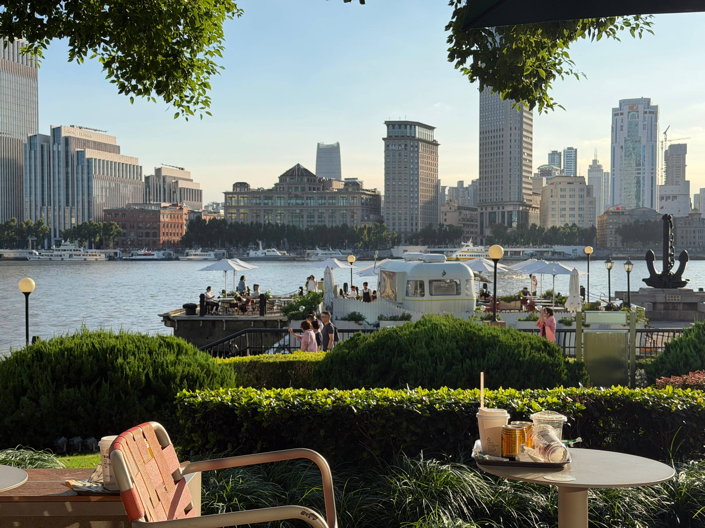
在滨江跑道从散步到骑行，喝咖啡，躲避美好的阳光，毕竟真的太晒了有没有
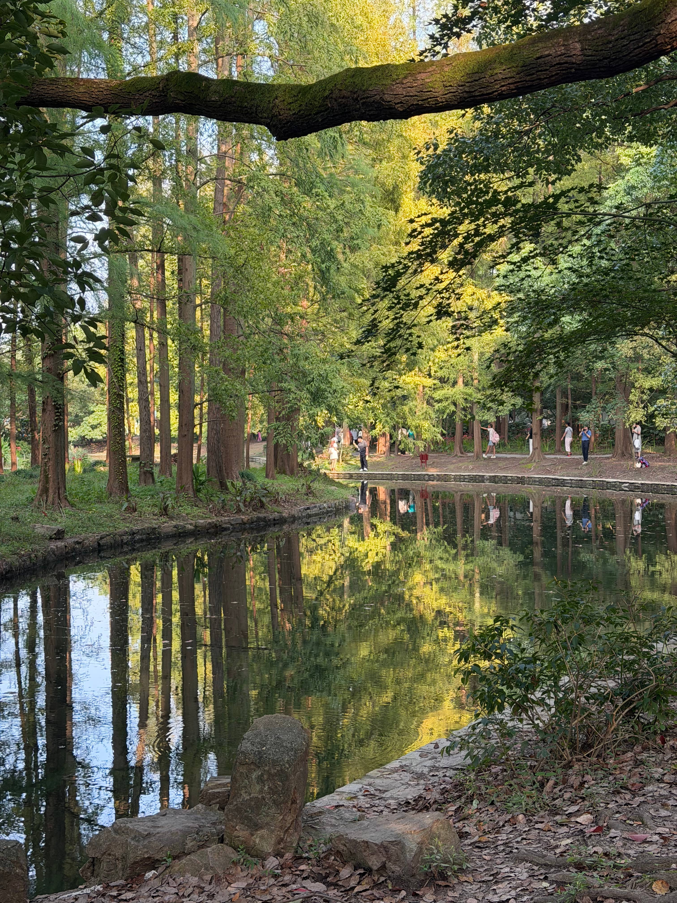
共青真的很漂亮，阳光贼好，树木倒映在水里像是油画，咱们拿起手机咔咔一顿拍照
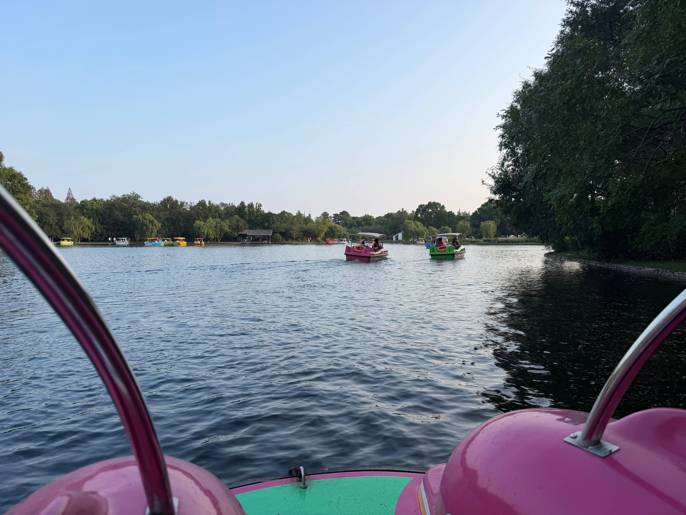
第一次开船就开的如此之好，是有驾驶天赋来的，在船上带上耳机，一起听歌
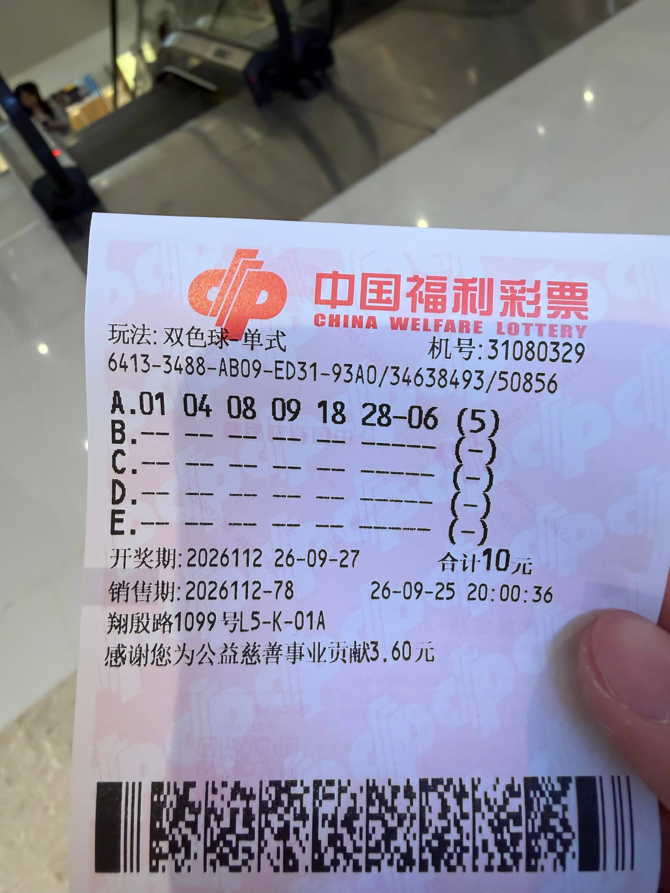
吃了很好吃的韩料，一起体验DJI，这个自拍真的很可爱有没有
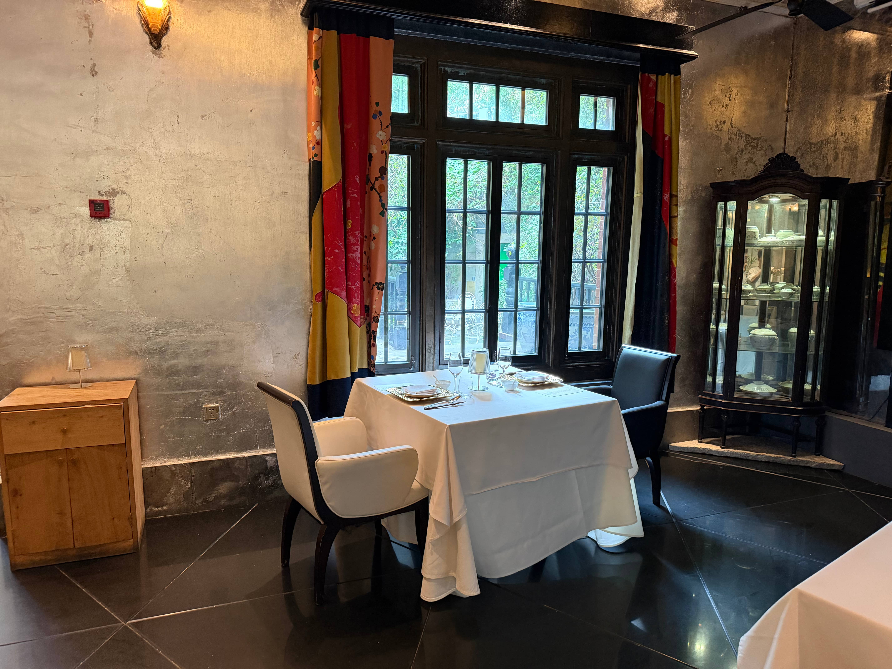
第一次来吃fine dining，看到了一对草坪婚礼，当然，是谁这么好看我不说
A king、a man……在史诗故事的下面，有两个叽叽喳喳的人
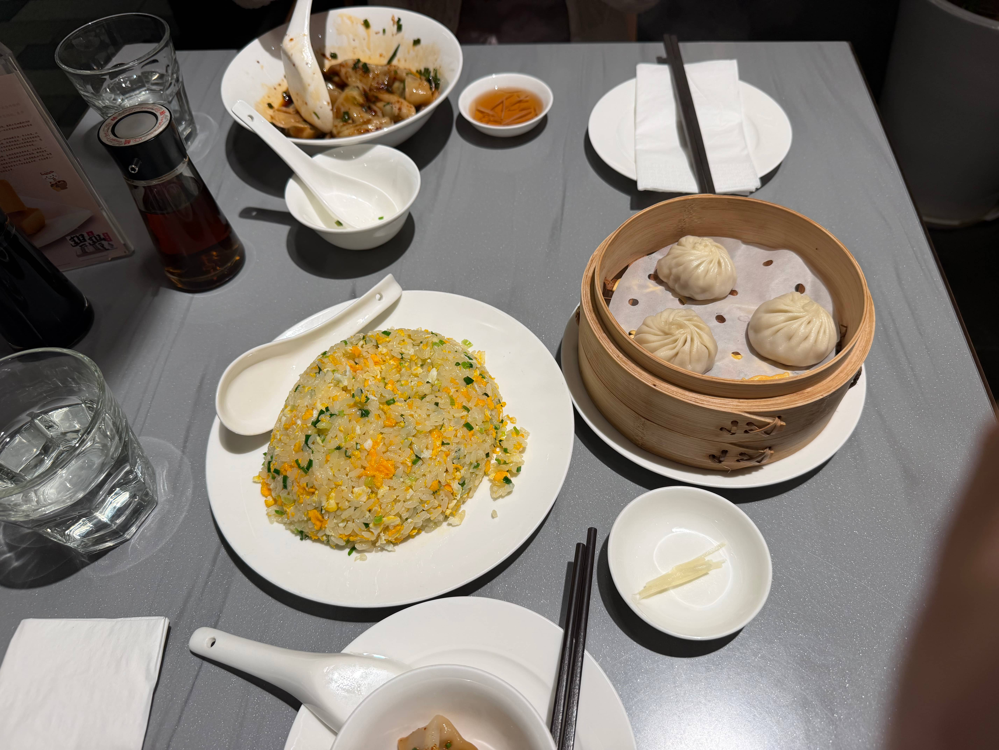
吃到了心心念念的红油抄手，一起闲聊与chat
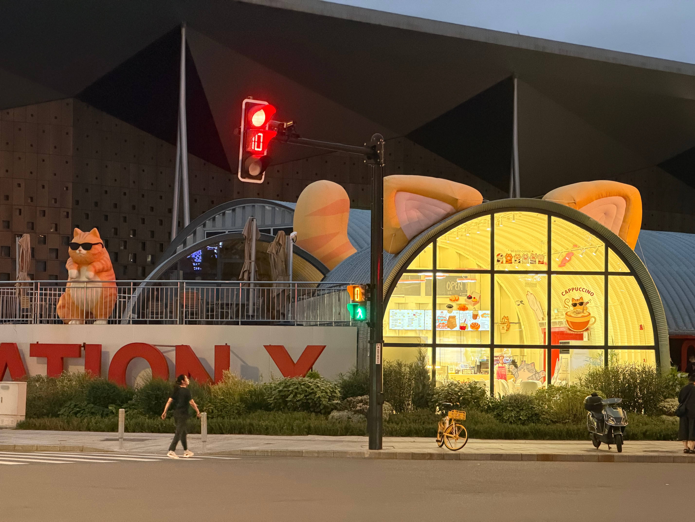
山缓缓好吃！水雾浮上来，好像什么都看不见了，捂眼睛
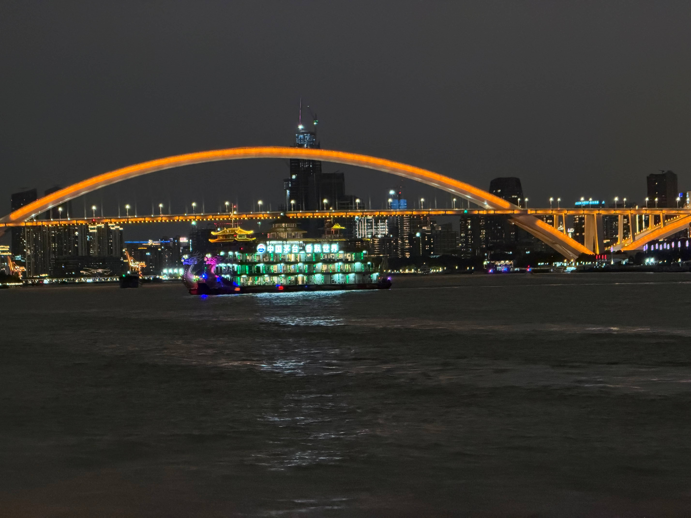
吃了超级好吃的泰料打抛饭，来到了江边看风景，
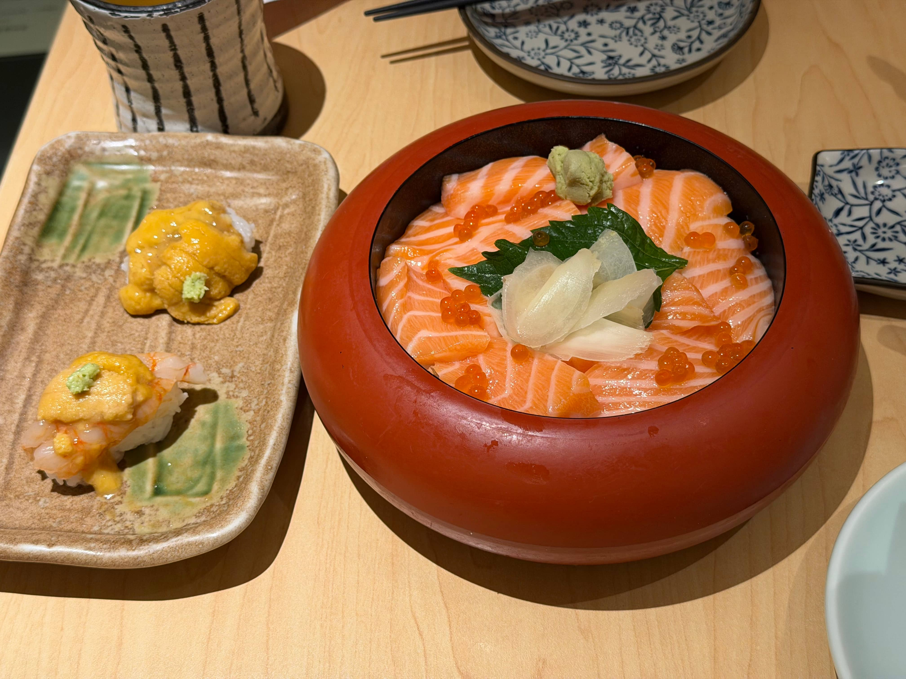
大侦探福尔摩超一下就找到了藏在花瓶背后的取号，并且在外面呆了一会儿就成功进来了！
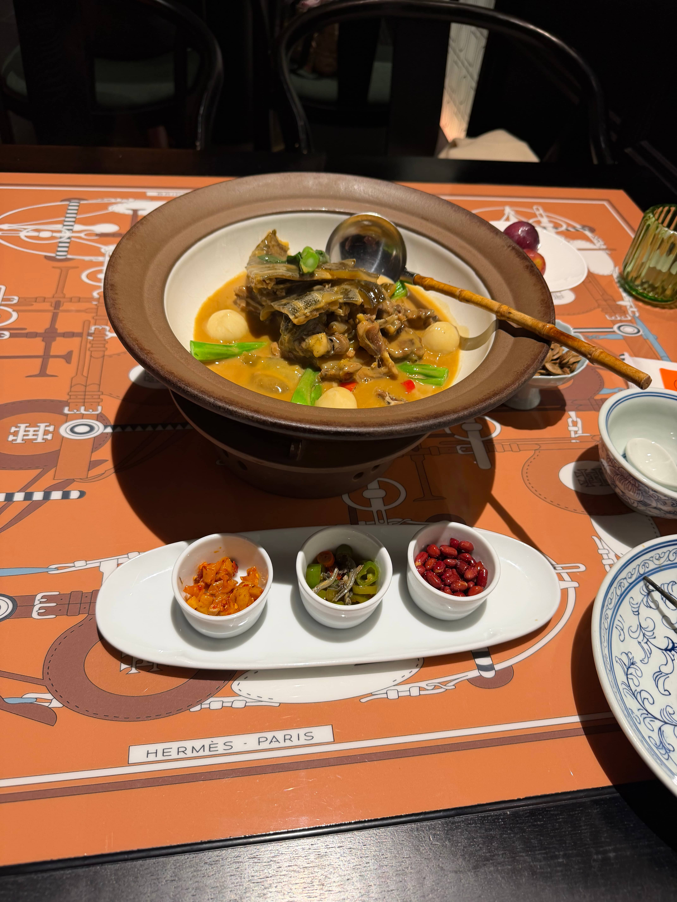
谁能想到咱俩国庆还来一起加班啊！甲鱼汤浇饭真的好好吃，有品！跟着超超总是能吃到各种好吃的(*^▽^*)
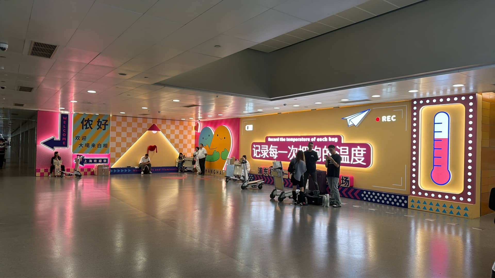
美好的日子怎么就戛然而止了呢，含泪送上飞机。正所谓小别胜新婚，不见面的日子把思念拉的更长更有韧性
未来的路确实很长
会有不少挫折和考验
但我想和你一起走下去
一起在阳光很好的天气出门/听歌/运动/聊天/观影...
还有无数想要尝试的东西！
一起去创造更多的经历和回忆
成为更好的我们，一起开开心心地过下去
现在，轮到超超做出选择了
谢谢你的回答，我已经收到了（手动自嘲熊.jpg）